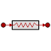

THERMAL.GL_mat
COMPONENT GL_mat IS_A AGL
ICON:

DESCRIPTION:
Linear thermal conductance with variable properties
CONSTRUCTION PARAMETERS:
| NAME |
TYPE |
DEFAULT |
DESCRIPTION |
UNITS
|
| n | INTEGER | 1 | Dimension of thermal port | - |
PORTS:
| NAME |
TYPE |
PARAMETERS |
DIRECTION |
CARDINALITY |
DESCRIPTION
|
| tp_in | PORTS_LIB.thermal | (n = n) | IN | 0,1 | Thermal inlet port |
| tp_out | PORTS_LIB.thermal | (n = n) | OUT | 0,1 | Thermal outlet port |
DATA:
| NAME |
TYPE |
DEFAULT |
RANGE |
DESCRIPTION |
UNITS
|
| F | REAL | 0.1 | | Area to thermal path ratio | m |
| k | REAL | 0.1 | | Thermal conductivity if material is None | W/(m·K) |
| mat | ENUM Material | None | | Material | - |
DECLS:
| NAME |
TYPE |
INITIAL |
RANGE |
DESCRIPTION |
UNITS
|
| Vcond[n] | REAL | | | Variable thermal conductance per node | W/K |
| ipt[n] | INTEGER | 0 | | Pointer to last table position | |
| k_var[n] | REAL | | | Thermal conductivity | W/(m·K) |
| q[n] | REAL | | | Heat flow | W |
FORMULATION:
Document generated automatically (Date: 2019:01:23, Time: 00:20:04)